Fitting a Univariate Distribution Using Cumulative Probabilities
The most common method for fitting a univariate distribution to data is maximum likelihood. But maximum likelihood does not work in all cases, and other estimation methods, such as the Method of Moments, are sometimes needed. This demo describes another generally-applicable method for fitting univariate distributions that can be useful in cases when maximum likelihood fails, for example for some models that include a threshold parameter. When applicable, maximum likelihood is probably the better choice of methods, because it is often more efficient. But the method described here provides another tool that can be used when needed.
Contents
Fitting an Exponential Distribution Using Least Squares
The term "least squares" is most commonly used in the context of fitting a regression line or surface to model a response variable as a function of one or more predictor variables. The method described here is a very different application of least squares: univariate distribution fitting, with only a single variable.
To demonstrate, first simulate some sample data. We'll use an exponential distribution to generate the data. For the purposes of this example, as in practice, we'll assume that the data are not known to have come from a particular model.
rand('state',0); randn('state',0); n = 100; x = exprnd(2,n,1);
Next, compute the empirical cumulative distribution function (ECDF) of the data. This is simply a step function with a jump in cumulative probability, p, of 1/n at each data point, x.
x = sort(x); p = ((1:n)-0.5)' ./ n; stairs(x,p,'k-'); xlabel('x'); ylabel('Cumulative probability (p)');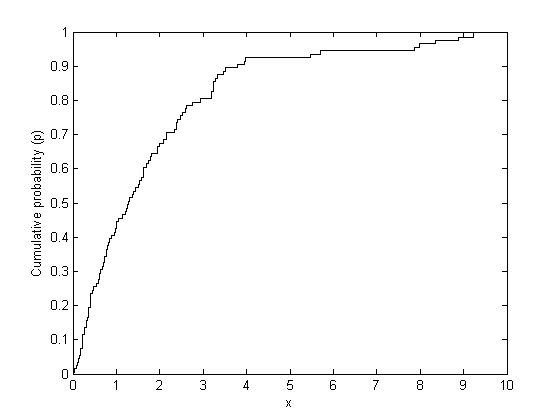
We'll fit an exponential distribution to these data. One way to do that is to find the exponential distribution whose cumulative distribution function (CDF) best approximates (in a sense to be explained below) the ECDF of the data. The exponential CDF is p = Pr{X <= x} = 1 - exp(-x/mu). Transforming that to -log(1-p)*mu = x gives a linear relationship between -log(1-p) and x. If the data do come from an exponential, we ought to see, at least approximately, a linear relationship if we plug the computed x and p values from the ECDF into that equation. If we use least squares to fit a straight line through the origin to x vs. -log(1-p), then that fitted line represents the exponential distribution that is "closest" to the data. The slope of the line is an estimate of the parameter mu.
Equivalently, we can think of y = -log(1-p) as an "idealized sample" from a standard (mean 1) exponential distribution. These idealized values are exactly equally spaced on the probability scale. A Q-Q plot of x and y ought to be approximately linear if the data come from an exponential distribution, and we'll fit the least squares line through the origin to x vs. y.
y = -log(1 - p); muHat = y \ x
muHat =
1.8911
Plot the data and the fitted line.
plot(x,y,'+', y*muHat,y,'r--'); xlabel('x'); ylabel('y = -log(1-p)');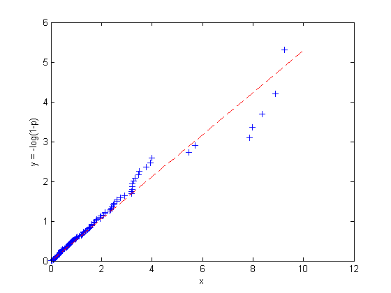
Notice that the linear fit we've made minimizes the sum of squared errors in the horizontal, or "x", direction. That's because the values for y = -log(1-p) are deterministic, and it's the x values that are random. It's also possible to regress y vs. x, or to use other types of linear fits, for example, weighted regression, orthogonal regression, or even robust regression. We will not explore those possibilities here.
For comparison, fit the data by maximum likelihood.
muMLE = expfit(x)
muMLE =
1.8314
Now plot the two estimated distributions on the untransformed cumulative probability scale.
stairs(x,p,'k-'); hold on xgrid = linspace(0,1.1*max(x),100)'; plot(xgrid,expcdf(xgrid,muHat),'r--', xgrid,expcdf(xgrid,muMLE),'b--'); hold off xlabel('x'); ylabel('Cumulative Probability (p)'); legend({'Data','LS Fit','ML Fit'},'location','southeast');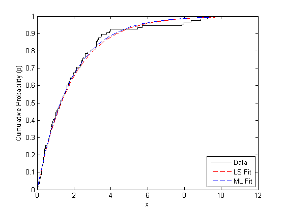
The two methods give very similar fitted distributions, although the LS fit has been influenced more by observations in the tail of the distribution.
Fitting a Weibull Distribution
For a slightly more complex example, simulate some sample data from a Weibull distribution, and compute the ECDF of x.
n = 100; x = wblrnd(2,1,n,1); x = sort(x); p = ((1:n)-0.5)' ./ n;
To fit a Weibull distribution to these data, notice that the CDF for the Weibull is p = Pr{X <= x} = 1 - exp(-(x/a)^b). Transforming that to log(a) + log(-log(1-p))*(1/b) = log(x) again gives a linear relationship, this time between log(-log(1-p)) and log(x). We can use least squares to fit a straight line on the transformed scale using p and x from the ECDF, and the slope and intercept of that line lead to estimates of a and b.
logx = log(x); logy = log(-log(1 - p)); poly = polyfit(logy,logx,1); paramHat = [exp(poly(2)) 1/poly(1)]
paramHat =
2.2789 1.0682
Plot the data and the fitted line on the transformed scale.
plot(logx,logy,'+', log(paramHat(1)) + logy/paramHat(2),logy,'r--'); xlabel('log(x)'); ylabel('log(-log(1-p))');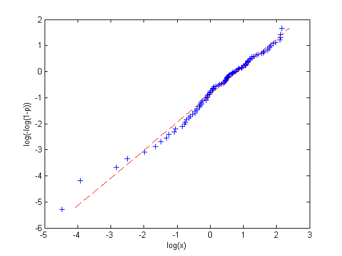
For comparison, fit the data by maximum likelihood, and plot the two estimated distributions on the untransformed scale.
paramMLE = wblfit(x) stairs(x,p,'k'); hold on xgrid = linspace(0,1.1*max(x),100)'; plot(xgrid,wblcdf(xgrid,paramHat(1),paramHat(2)),'r--', ... xgrid,wblcdf(xgrid,paramMLE(1),paramMLE(2)),'b--'); hold off xlabel('x'); ylabel('Cumulative Probability (p)'); legend({'Data','LS Fit','ML Fit'},'location','southeast');
paramMLE =
2.2712 1.0709
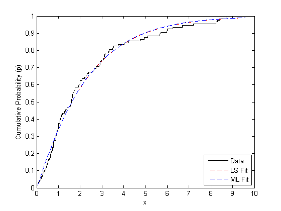 A Threshold Parameter Example
It's sometimes necessary to fit positive distributions like the Weibull or lognormal with a threshold parameter. For example, a Weibull random variable takes values over (0,Inf), and a threshold parameter, c, shifts that range to (c,Inf). If the threshold parameter is known, then there is no difficulty. But if the threshold parameter is not known, it must instead be estimated. These models are difficult to fit with maximum likelihood -- the likelihood can have multiple modes, or even become infinite for parameter values that are not reasonable for the data, and so maximum likelihood is often not a good method. But with a small addition to the least squares procedure, we can get stable estimates.
To illustrate, we'll simulate some data from a three-parameter Weibull distribution, with a threshold value. As above, we'll assume for the purposes of the example that the data are not known to have come from a particular model, and that the threshold is not known.
n = 100; x = wblrnd(4,2,n,1) + 4; hist(x,20); xlim([0 16]);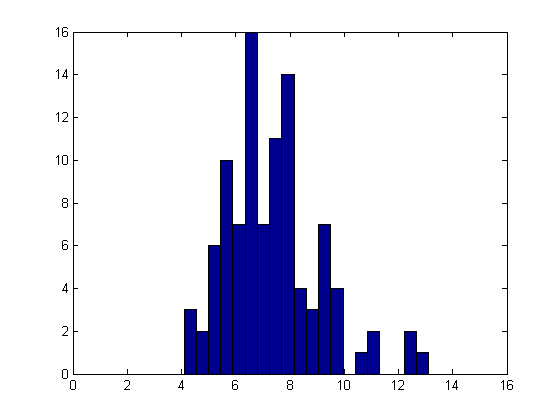
How can we fit a three-parameter Weibull distribution to these data? If we knew what the threshold value was, 1 for example, we could subtract that value from the data and then use the least squares procedure to estimate the Weibull shape and scale parameters.
x = sort(x); p = ((1:n)-0.5)' ./ n; logy = log(-log(1-p)); logxm1 = log(x-1); poly1 = polyfit(log(-log(1-p)),log(x-1),1); paramHat1 = [exp(poly1(2)) 1/poly1(1)] plot(logxm1,logy,'b+', log(paramHat1(1)) + logy/paramHat1(2),logy,'r--'); xlabel('log(x-1)'); ylabel('log(-log(1-p))');
paramHat1 =
6.8871 4.8760
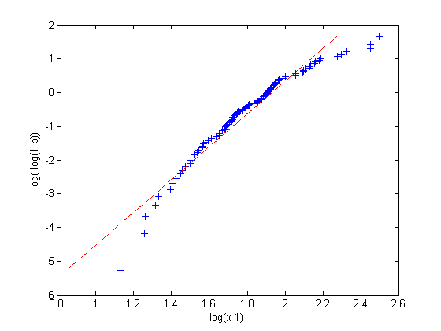 That's not a very good fit -- log(x-1) and log(-log(1-p)) do not have a linear relationship. Of course, that's because we don't know the correct threshold value. If we try subtracting different threshold values, we get different plots and different parameter estimates.
logxm2 = log(x-2); poly2 = polyfit(log(-log(1-p)),log(x-2),1); paramHat2 = [exp(poly2(2)) 1/poly2(1)]
paramHat2 =
5.8601 4.0069
logxm4 = log(x-4); poly4 = polyfit(log(-log(1-p)),log(x-4),1); paramHat4 = [exp(poly4(2)) 1/poly4(1)]
paramHat4 =
3.8036 1.9522
plot(logxm1,logy,'b+', logxm2,logy,'r+', logxm4,logy,'g+', ... log(paramHat1(1)) + logy/paramHat1(2),logy,'b--', ... log(paramHat2(1)) + logy/paramHat2(2),logy,'r--', ... log(paramHat4(1)) + logy/paramHat4(2),logy,'g--'); xlabel('log(x - c)'); ylabel('log(-log(1 - p))'); legend({'Threshold = 1' 'Threshold = 2' 'Threshold = 4'}, 'location','northwest');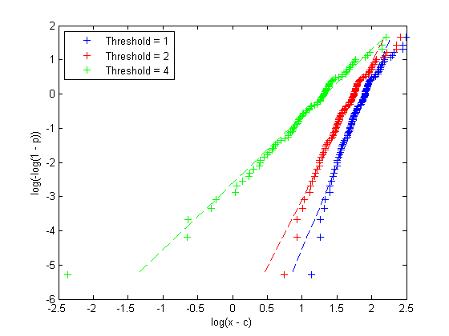
The relationship between log(x-4) and log(-log(1-p)) appears approximately linear. Since we'd expect to see an approximately linear plot if we subtracted the true threshold parameter, this is evidence that 4 might be a reasonable value for the threshold. On the other hand, the plots for 2 and 3 differ more systematically from linear, which is evidence that those values are not consistent with the data.
This argument can be formalized. For each provisional value of the threshold parameter, the corresponding provisional Weibull fit can be characterized as the parameter values that maximize the R^2 value of a linear regression on the transformed variables log(x-c) and log(-log(1-p)). To estimate the threshold parameter, we can carry that one step further, and maximize the R^2 value over all possible threshold values.
r2 = @(x,y) 1 - norm(y - polyval(polyfit(x,y,1),x)).^2 / norm(y - mean(y)).^2; threshObj = @(c) -r2(log(-log(1-p)),log(x-c)); cHat = fminbnd(threshObj,.75*min(x), .9999*min(x)); poly = polyfit(log(-log(1-p)),log(x-cHat),1); paramHat = [exp(poly(2)) 1/poly(1) cHat] logx = log(x-cHat); logy = log(-log(1-p)); plot(logx,logy,'b+', log(paramHat(1)) + logy/paramHat(2),logy,'r--'); xlabel('log(x - cHat)'); ylabel('log(-log(1 - p))');
paramHat =
4.0724 2.3401 3.7241
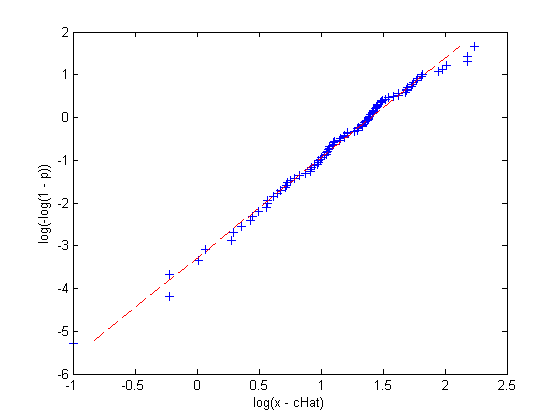 Non-Location-Scale Families
The exponential distribution is a scale family, and on the log scale, the Weibull distribution is a location-scale family, so this least squares method was straightforward in those two cases. The general procedure to fit a location-scale distribution is
- Compute the ECDF of the observed data.
- Transform the distribution's CDF to get a linear relationship between some function of the data and some function of the cumulative probability. These two functions do not involve the distribution parameters, but the slope and intercept of the line do.
- Plug the values of x and p from the ECDF into that transformed CDF, and fit a straight line using least squares.
- Solve for the distribution parameters in terms of the slope and intercept of the line.
We also saw that fitting a distribution that is a location-scale family with an additional a threshold parameter is only slightly more difficult.
But other distributions that are not location-scale families, like the gamma, are a bit trickier. There's no transformation of the CDF that will give a relationship that is linear. However, we can use a similar idea, only this time working on the untransformed cumulative probability scale. A P-P plot is the appropriate way to visualize that fitting procedure.
If the empirical probabilities from the ECDF are plotted against fitted probabilities from a parametric model, a tight scatter along the 1:1 line from zero to one indicates that the parameter values define a distribution that explains the observed data well, because the fitted CDF approximates the empirical CDF well. The idea is to find parameter values that make the probability plot as close to the 1:1 line as possible. That may not even be possible, if the distribution is not a good model for the data. If the P-P plot shows a systematic departure from the 1:1 line, then the model may be questionable. However, it's important to remember that since the points in these plots are not independent, interpretation is not exactly the same as a regression residual plot.
For example, we'll simulate some data and fit a gamma distribution.
n = 100; x = gamrnd(2,1,n,1);
Compute the ECDF of x.
x = sort(x); pEmp = ((1:n)-0.5)' ./ n;
We can make a probability plot using any initial guess for the gamma distribution's parameters, a=1 and b=1, say. That guess is not very good -- the probabilities from the parametric CDF are not close to the probabilities from the ECDF. If we tried a different a and b, we'd get a different scatter on the P-P plot, with a different discrepancy from the 1:1 line. Since we know the true a and b in this example, we'll try those values.
a0 = 1; b0 = 1; p0Fit = gamcdf(x,a0,b0); a1 = 2; b1 = 1; p1Fit = gamcdf(x,a1,b1); plot([0 1],[0 1],'k--', pEmp,p0Fit,'b+', pEmp,p1Fit,'r+'); xlabel('Empirical Probabilities'); ylabel('(Provisionally) Fitted Gamma Probabilities'); legend({'1:1 Line','a=1, b=1', 'a=2, b=1'}, 'location','southeast');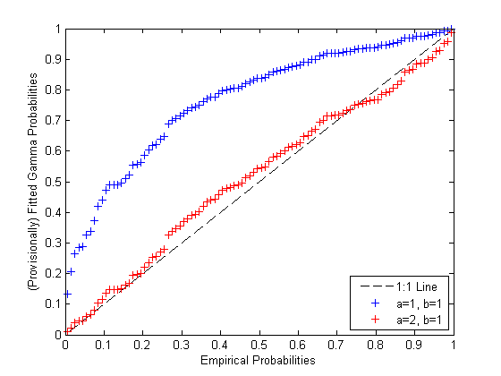
The second set of values for a and b make for a much better plot, and thus are more compatible with the data, if you are measuring "compatible" by how straight you can make the P-P plot.
To make the scatter match the 1:1 line as closely possible, we can find the values of a and b that minimize a weighted sum of the squared distances to the 1:1 line. The weights are defined in terms of the empirical probabilities, and are lowest in the center of the plot and highest at the extremes. These weights compensate for the variance of the fitted probabilities, which is highest near the median and lowest in the tails. This weighted least squares procedure defines the estimator for a and b.
wgt = 1 ./ sqrt(pEmp.*(1-pEmp)); gammaObj = @(params) sum(wgt.*(gamcdf(x,exp(params(1)),exp(params(2)))-pEmp).^2); paramHat = fminsearch(gammaObj,[log(a1),log(b1)]); paramHat = exp(paramHat)
paramHat =
2.5161 0.8080
pFit = gamcdf(x,paramHat(1),paramHat(2)); plot([0 1],[0 1],'k--', pEmp,pFit,'b+'); xlabel('Empirical Probabilities'); ylabel('Fitted Gamma Probabilities');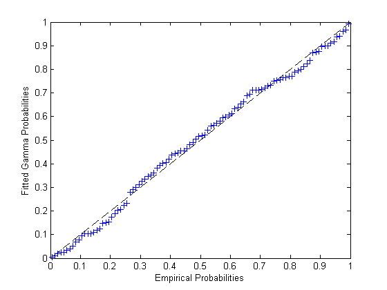
Notice that in the location-scale cases considered earlier, we could fit the distribution with a single straight line fit. Here, as with the threshold parameter example, we had to iteratively find the best-fit parameter values.
Model Misspecification
The P-P plot can also be useful for comparing fits from different distribution families. What happens if we try to fit a lognormal distribution to these data?
wgt = 1 ./ sqrt(pEmp.*(1-pEmp)); LNobj = @(params) sum(wgt.*(logncdf(x,params(1),exp(params(2)))-pEmp).^2); mu0 = mean(log(x)); sigma0 = std(log(x)); paramHatLN = fminsearch(LNobj,[mu0,log(sigma0)]); paramHatLN(2) = exp(paramHatLN(2))
paramHatLN =
0.5447 0.6570
pFitLN = logncdf(x,paramHatLN(1),paramHatLN(2)); hold on plot(pEmp,pFitLN,'rx'); hold off ylabel('Fitted Probabilities'); legend({'1:1 Line', 'Fitted Gamma', 'Fitted Lognormal'},'location','southeast');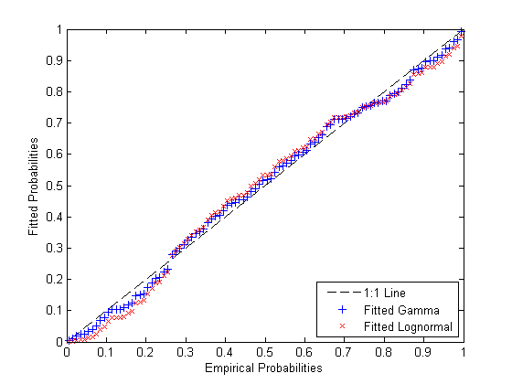
Notice how the lognormal fit differs systematically from the gamma fit in the tails. It grows more slowly in the left tail, and dies more slowly in the right tail. The gamma seems to be a slightly better fit to the data.
A Lognormal Threshold Parameter Example
The lognormal distribution is simple to fit by maximum likelihood, because once the log transformation is applied to the data, maximum likelihood is identical to fitting a normal. But it is sometimes necessary to estimate a threshold parameter in a lognormal model. The likelihood for such a model is unbounded, and so maximum likelihood does not work. However, the least squares method provides a way to make estimates. Since the two-parameter lognormal distribution can be log-transformed to a location-scale family, we could follow the same steps as in the earlier example that demonstrated fitting a Weibull distribution with threshold parameter. Here, however, we'll do the estimation on the cumulative probability scale, as in the previous example demonstrating a fit with the gamma distribution.
To illustrate, we'll simulate some data from a three-parameter lognormal distribution, with a threshold.
n = 200; x = lognrnd(0,.5,n,1) + 10; hist(x,20); xlim([8 15]);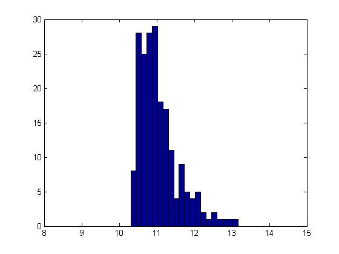
Compute the ECDF of x, and find the parameters for the best-fit three-parameter lognormal distribution.
x = sort(x); pEmp = ((1:n)-0.5)' ./ n; wgt = 1 ./ sqrt(pEmp.*(1-pEmp)); LN3obj = @(params) sum(wgt.*(logncdf(x-params(3),params(1),exp(params(2)))-pEmp).^2); c0 = .99*min(x); mu0 = mean(log(x-c0)); sigma0 = std(log(x-c0)); paramHat = fminsearch(LN3obj,[mu0,log(sigma0),c0]); paramHat(2) = exp(paramHat(2))
paramHat = -0.2443 0.5767 10.1488
pFit = logncdf(x-paramHat(3),paramHat(1),paramHat(2)); plot(pEmp,pFit,'b+', [0 1],[0 1],'k--'); xlabel('Empirical Probabilities'); ylabel('Fitted 3-param Lognormal Probabilities');

Measures of Precision
Parameter estimates are only part of the story -- a model fit also needs some measure of how precise the estimates are, typically standard errors. With maximum likelihood, the usual method is to use the information matrix and a large-sample asymptotic argument to approximate the covariance matrix of the estimator over repeated sampling. No such theory exists for these least squares estimators.
However, Monte-Carlo simulation provides another way to estimate standard errors. If we use the fitted model to generate a large number of datasets, we can approximate the standard error of the estimators with the Monte-Carlo standard deviation. For simplicity, we've defined a fitting function in a separate file, logn3fit.m.
estsSim = zeros(1000,3); for i = 1:size(estsSim,1) xSim = lognrnd(paramHat(1),paramHat(2),n,1) + paramHat(3); estsSim(i,:) = logn3fit(xSim); end std(estsSim)
ans =
0.1602 0.0914 0.1164
It might also be useful to look at the distribution of the estimates, to check if the assumption of approximate normality is reasonable for this sample size, or to check for bias.
subplot(3,1,1), hist(estsSim(:,1),20); title('Log-Location Parameter Bootstrap Estimates'); subplot(3,1,2), hist(estsSim(:,2),20); title('Log-Scale Parameter Bootstrap Estimates'); subplot(3,1,3), hist(estsSim(:,3),20); title('Threshold Parameter Bootstrap Estimates');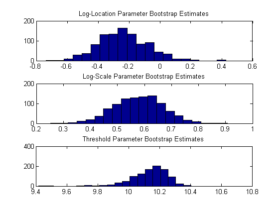
Clearly, the estimator for the threshold parameter is skewed. This is to be expected, since it is bounded above by the minimum data value. The other two histograms indicate that approximate normality might be a questionable assumption for the log-location parameter (the first histogram) as well. The standard errors computed above must be interpreted with that in mind, and the usual construction for confidence intervals might not be appropriate for the log-location and threshold parameters.
The means of the simulated estimates are close to the parameter values used to generate simulated data, indicating that the procedure is approximately unbiased at this sample size, at least for parameter values near the estimates.
[paramHat; mean(estsSim)]
ans = -0.2443 0.5767 10.1488 -0.2363 0.5779 10.1344
Finally, we could also have used the function bootstrp to compute bootstrap standard error estimates. These do not make any parametric assumptions about the data.
estsBoot = bootstrp(1000,@logn3fit,x); std(estsBoot)
ans =
0.1734 0.0946 0.1259
The bootstrap standard errors are not far off from the Monte-Carlo calculations. That's not surprising, since the fitted model is the same one from which the example data were generated.
Summary
The fitting method described here is an alternative to maximum likelihood that can be used to fit univariate distributions when maximum likelihood fails to provide useful parameter estimates. One important application is in fitting distributions involving a threshold parameter, such as the three-parameter lognormal. Standard errors are more difficult to compute than for maximum likelihood estimates, because analytic approximations do not exist, but simulation provides a feasible alternative.
The P-P plots used here to illustrate the fitting method are useful in their own right, as a visual indication of lack of fit when fitting a univariate distribution.